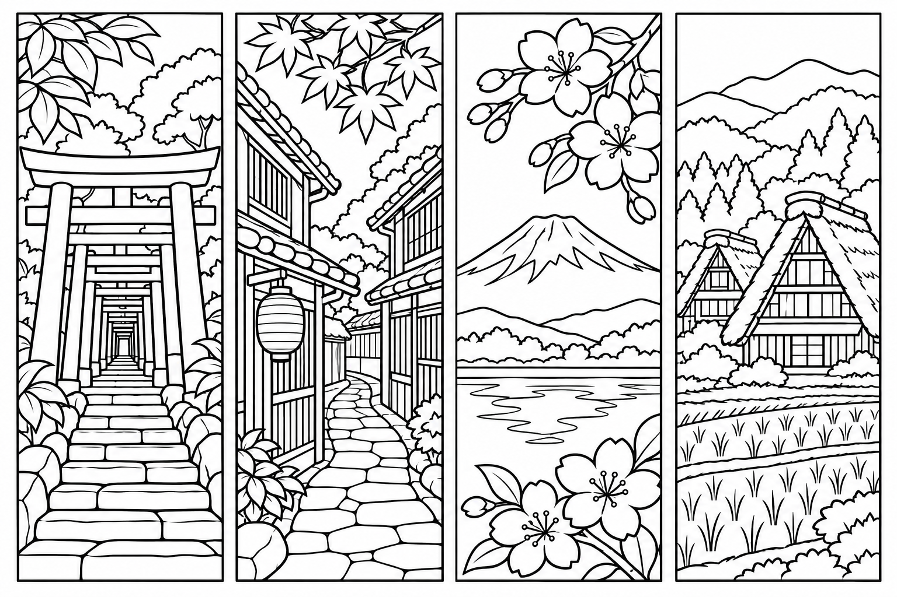
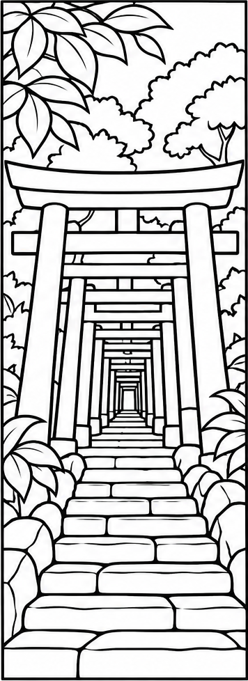
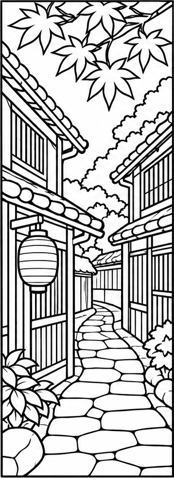
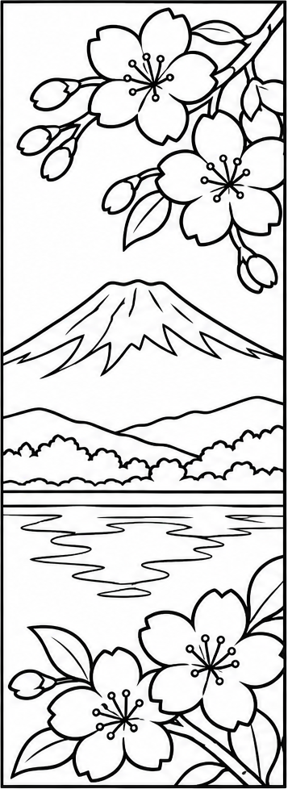
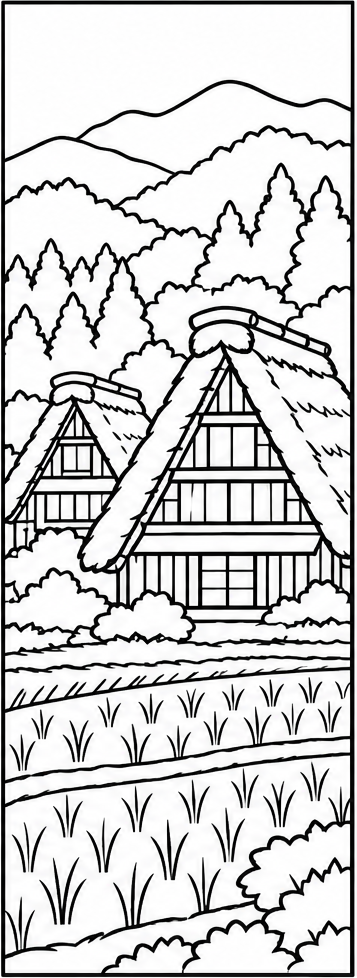
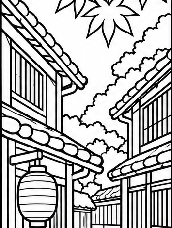

和景色式 AI塗り絵しおり販売ガイド

日本の風景を、塗って使えるしおりに。
まずは、この4本のようなセットを一つ作ります。画像から印刷用PDF、英語の販売原稿、Etsyの入力までつなげていきましょう。

「稼ぎ方」より、作る商品を具体的にする

僕は、いきなり「稼げる方法を教えて」と聞くことは勧めません。
今回選ぶのは、AIで作る塗り絵しおり。買う人を「日本の風景が好きで、読書や塗り絵を楽しむ人」と置くと、AIに頼む内容も具体的になります。
僕がおすすめするのは、日本らしい風景を入れること。今回は「日本風」の一言で終わらせず、何の景色か分かる4本にします。買い手が好きな風景を選べるセットにする、という考え方です。
4つの風景を、塗れる線画にする
ChatGPTで新しい会話を開き、下の指示文を送ります。画像が作られない場合は、画像生成を選んでから同じ指示を送ってください。
富士山と湖／合掌造りの里




線画を作る指示文を開く
日本の風景を題材にした、大人が色鉛筆で塗れるしおり用線画を作ってください。 【テーマ】鳥居の参道／町家の路地／富士山と湖／合掌造りの里 横長3:2の白い画像に、同じ大きさの縦長しおりを4本、横一列に配置。各しおりの縦横比はおよそ5:14。4本の間と外側に白い余白を入れ、各しおりを細い長方形の切り取り枠で囲んでください。 黒の輪郭線と白地だけ。灰色・影・ベタ塗り・文字・ロゴ・透かしはなし。細かすぎる模様を避け、塗る空間を残してください。枠を画像内に収め、建物や鳥居の構造を自然にしてください。 他人の作品・キャラクター・商品画像をまねず、日本の風景を題材にしたオリジナルイラストにしてください。特定地点を忠実に再現した写真としては扱いません。説明文だけでなく、画像を生成してください。
塗れる白い空間を残す
日本らしい題材でも、線が密集すると塗りづらくなります。今回の町家は、格子や石畳が見える程度に。屋根の線まで増やしすぎたら、同じ題材のまま線を減らします。

気になる場所だけ直す指示文
添付画像の4本の構成と題材を保って修正してください。 【直す場所】2本目の町家の路地 【直す内容】屋根の下が細かすぎるので線を減らし、塗れる白い空間を増やす。柱と屋根のつながりを自然にする。 ほかの3本の題材、線の太さ、切り取り枠は維持。色・文字・影は追加しないでください。
採用する画像を開き、保存ボタンから端末へ保存します。次の工程には、この採用版を添付してください。
ChatGPTの画像作成・編集・保存。利用上限や表示はアカウント・アプリによって異なります。
印刷して使えるPDFにまとめる
売るのは画面上の画像ではなく、買った人が使えるファイルです。A4横の1ページに4本を収め、各しおりを約50×140mmにします。
PDFにする指示文を開く
添付した採用版の線画から、印刷用PDFを作ってください。 4本をそれぞれ切り取り枠の外側で切り出す。絵を描き足したり、縦横に引き伸ばさない。 A4横（297×210mm）の1ページに、各50×140mmの領域で4本を横一列に配置。余白と間隔を取り、各画像の縦横比を保って収める。 枠や線の切れを確認し、japan-coloring-bookmarks-a4.pdf としてダウンロードできる形で保存してください。ファイルを作れない環境なら、作成済みと答えず、可能な範囲を伝えてください。
PDFのリンクが出たら保存して開きます。ファイル出力が使えないときは、下の台紙メーカーに4本入りの画像を読み込み、「PDFで保存」で同じ形にできます。
画像を台紙に並べる- 4本の枠が全部見え、線や絵が切れていない。
- 印刷設定は「実際のサイズ／100%」、A4横。
- 1本を切ってみて、大きさと塗りやすさを確かめる。
A4横・1ページ・4本の練習用見本。販売時は、あなた自身でテーマと指示を決めたオリジナルを作ってください。
実物に合う英語の販売原稿を作る
僕は、図案だけで止めず、英語の商品名と説明文もAIへ任せます。
ただ「魅力的に売って」ではなく、できたPDFを見せます。4本なのか、何ページなのか、何を買う商品なのか。ここをそろえてから、英語にしてもらいます。
A4横PDF1枚
1 landscape A4 PDF
発送はしない
No physical item
英語の販売原稿を作る指示文
添付したPDFと画像に一致する英語のTitle、Description、検索タグ候補を作ってください。 内容：線画しおり4本、鳥居の参道・町家の路地・富士山と湖・合掌造りの里。A4横PDF1ファイル、しおり約50×140mm。購入者が印刷し、塗って切るデジタル商品。物品発送なし。個人利用。 AIを使用して作った図案であることを説明文に明記。印刷はActual size / 100%と案内する。実在地点の正確な再現とは書かない。 未確認の画質・手描き・売上・評価・納期・返金条件・商用利用の許可を加えない。価格は未決定。 Titleは何のデータか最初に分かる自然な英語。タグ候補は短い語句で13個まで。実物が上の条件と異なる場合は、実物を優先して原稿を直し、相違点を日本語でも説明してください。
Digital download · 4 designs · No physical item shipped
写真には、実際に渡すPDFのプレビューを使います。表紙の人物入りバナーは、この教材の案内用です。販売商品に含まれない物は、含まれるように見せないでください。
この見本の英語説明文とタグを見る
Print, color, and cut four Japanese landscape bookmarks for your reading time. This digital download includes one landscape A4 PDF (297 x 210 mm), with four black-and-white bookmark designs: a torii path, a traditional wooden lane, Mount Fuji by a lake, and a thatched-roof village. Each bookmark area is approximately 50 x 140 mm. This is a digital file. No physical item will be shipped. The designs are uncolored; pencils, paper, and other objects shown in usage illustrations are not included. Print on A4 paper in landscape orientation, at Actual size / 100%. Check that all four borders are visible. Color, then cut along the rectangular borders. These illustrations were created with the assistance of an AI image-generation tool and arranged as a printable PDF. They are artistic interpretations of Japanese scenery, not exact depictions of specific locations. For personal use. Please do not redistribute or resell the digital files. Tags: japan bookmarks / coloring bookmarks / printable bookmarks / japanese landscape / adult coloring / mount fuji art / torii gate art / reading gift / color your own / a4 printable / digital download / book lovers gift / coloring pdf
Etsyへ、PDFと販売原稿を渡す
Etsyは、海外の買い手にもデジタル商品を販売できるマーケットです。ショップが未開設なら、公式の開設案内から、居住国・本人確認・入金先・支払情報などを登録します。
ショップ管理の「Listings」から「Add a listing」へ進みます。
4 Printable Designs, A4 PDF
Digital download / No physical item
Created with the assistance of AI
選択式の制作方法は、実際のAI利用に合わせて回答します。商品画像には上の採用画像、添付ファイルにはPDFを入れます。
プレビューで画像・英文・価格・添付PDFを確認し、下書き保存します。販売すると決めたら、表示される費用と条件を確認したうえで公開へ進みます。入力欄の名前や順序が違うときも、上の対応で探してください。公式の出品手順
価格は、レビュー数の掛け算で決めない
似た商品の価格や内容は、出品の参考になります。ただし「価格×レビュー数」は、売上や利益の証拠にはなりません。自分の商品点数、使いやすさ、手数料を見て価格を決めます。
出品前に確認する条件と費用
AI作品は、自分のオリジナルの指示に基づくものを使い、説明文にAI利用を開示します。他人の作品をまとめて売ることや、プロンプト集の販売とは区別してください。Etsyの創作基準
デジタルファイルは1商品につき最大5個、各20MBまで。買い手へ渡すファイル名も見直します。デジタル商品の登録方法
出品手数料は1件US$0.20、取引手数料は6.5%が基本です。決済・為替・広告等の費用、税、ショップ開設費が別に発生する場合があります。公開・更新時の表示と公式の料金条件を確認してください。
商品画像には、購入するデータの実際のプレビューを含めます。商品画像の条件
繰り返す作業を、まとめてAIに任せる
僕は、会社にいる間も回すように、ChatGPTへ指示を出しています。画像を一度作って終わりにせず、その後の反復作業も任せる使い方です。
慣れてきたら、風景のテーマと納品条件を最初に渡して、線画・PDF・英語まで続けて頼みます。途中で何を確認するかも、一緒に指示しておきましょう。
和風の庭園／海辺の鳥居
一括で任せる指示文を開く
この会話で、塗り絵しおり1セットを、線画→確認→PDF→英語の出品原稿まで連続して進めてください。 【テーマ】雪の温泉街／竹林の小道／和風の庭園／海辺の鳥居 先に買い手・4本の構成・出力ファイルを短く示し、その後に画像を生成。 共通仕様：白地に黒い輪郭線、4本、各50×140mmの領域、A4横PDF1枚。文字・ロゴなし。他人の図案を使わない。特定の実在地点の正確な再現とは表示しない。 線の切れ、構造の破綻、細かすぎる箇所を確認・修正してPDFを保存。英語原稿は実物の本数・寸法・ページ数と一致させ、AI利用、デジタル商品、発送なしを説明。 最終出力：画像、PDF、Title、Description、タグ候補、自分で確認が必要な項目。ファイル生成や処理の続行ができないときは、その場所で止めて状況を伝える。 ショップへログインしない。公開・購入・課金・外部へのアップロード・送信・自動登録はしない。最後は私が画像と試し刷りを確認し、価格と出品を決める。 予約や毎日実行の設定は行わず、この会話の1回分として処理してください。
これは会話内で連続して進める方法です。利用できる機能や上限によって止まることがあります。毎晩の無人運用や自動出品を設定するものではありません。止まったら、保存した画像・PDFと「残りから続けて」を渡します。
まず1枚、印刷してみる
今日はテーマを4つ決め、線画を作って1枚印刷するところまで進めてみてください。枠・線・大きさを確かめたら、英語原稿と販売ページをそろえます。
ガイドと実践ファイルをまとめて保存ZIPを展開して「index.html」を開くと、このガイドを手元で読めます。見本PDF、指示文、英語原稿、ブラウザーで動く台紙メーカーを同梱。PCでの展開・印刷がおすすめです。
AIマネタイズの教科書
今回の特典では、しおりを商品にする手順を進めました。次は、AI副業をどう進めるか。全体を整理したい方には、すみっちの公式LINEで「AIマネタイズの教科書」をお渡ししています。
 公式LINEで教科書を受け取る
公式LINEで教科書を受け取る